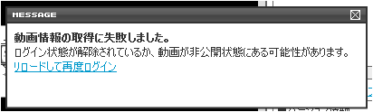

YouTubeはログインしなくても検索，再生が行えるので問題ないのですが，ニコニコ動画の場合ログインしないと検索・再生共に出来ません．
従って，このアドオンではニコニコ動画に自動ログインする機能があるのですが，それについていくつか説明します．
-
ログインするタイミング
ニコニコ動画をロードしようとしたか，もしくは検索をしようとしたときにログインのチェックが行われ，ログインしていなければ自動でログインします．
また，ログインした後も一定時間毎にクッキーの更新を行ってログイン状態を保とうとします．
-
2重ログインについて
- ニコニコ動画では2重ログイン（2カ所からログインすること．デスクトップとノートPCから同時にログインしようとする場合などに起こります．）が禁止されています．
- 2重ログインでクッキーが無効化された時に動画を再生しようとすると，下のような画面になります．
- この画面になったら再度ログインを試みます．（リロードして再度ログインのリンクをクリックする必要はありません．）
